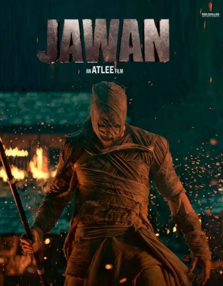

Overview

"JAWAN" is a high-toned action-adventure about a well-meaning terrorist and his crack team of hostage-taking girls with guns.
A thrilling action movie
"JAWAN" is a high-toned action-adventure about a well-meaning terrorist and his crack team of hostage-taking girls with guns.
“Jawan” was produced by the star and his wife Gauri Khan’s Red Chillies Entertainment production company, so it’s not surprising to see how well-worn and carefully navigated the movie’s contrived plot and conventional mood swings tend to be. This is a Shah Rukh Khan vehicle, and by now, that conjures certain formulaic expectations. Still, the makers of “Jawan” spend a little too much trying to convince viewers that we don’t really know Khan’s mysterious antihero, who, after an overproduced but still rousing flashback action sequence, takes a train-ful of commuters hostage.
Khan’s character, soon revealed to be Azad, the warden of a women’s prison, seemingly executes a woman in a burqa, all while wearing a goofy bald cap, which he soon rips off. Khan, in character, rasps out his expectations-flouting demands to the generically incensed negotiator Narmada (Nayanthara): get the Agriculture Minister to pay off starving farmers’ extortionate loans, or more people will die.
According to a report in Hindustan Times, it was Shah Rukh who choreographed the dance steps. The superstar confirmed the same during his #AskSRK session on X. He revealed that the song choice was Atlee’s idea. He shared, "The song is Atlee’s idea. I also love it with the dance and all. Too much magic in the idea I think. #Jawan”.